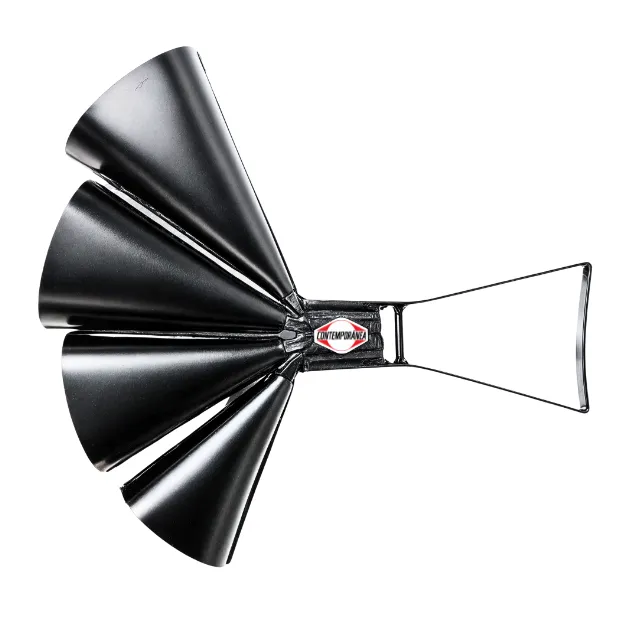

Surdo


Origem e Evolução
O surdo é um instrumento de percussão de origem brasileira, criado por Alcebíades Maia Barcelos, o “Bide”. Ele concebeu o surdo usando latão de manteiga, aros e pele de cabrito, para marcar o ritmo das escolas de samba. Sua estreia ocorreu no Carnaval carioca de 1928, no desfile da escola Deixa Falar.
Com o passar dos anos, o surdo evoluiu para estruturas em madeira ou metal, mantendo o formato cilíndrico e o timbre grave. Hoje, cada bateria de escola de samba costuma usar entre 25 e 35 surdos para definir o compasso das alas.
Como Tocar o Surdo
O músico que toca o surdo é chamado de surdista. Ele usa uma baqueta em uma mão para percutir a pele do tambor, enquanto a outra mão abafa ou insere padrões de apoio com os dedos e a palma. O surdo fica pendurado no ombro do surdista por um talabarte, de modo que a pele fique quase na horizontal.
Tipos de Surdo na Bateria
- Surdo de Primeira (Marcação): O maior e mais grave, com cerca de 75 cm de diâmetro. Marca o segundo tempo do compasso binário, servindo de referência para toda a bateria.
- Surdo de Segunda (Resposta): Com 50–60 cm de diâmetro, menos grave que o de primeira. Bate o primeiro tempo do compasso, interagindo com o surdo de marcação.
- Surdo de Terceira (Cortador): O menor (cerca de 40 cm). Executa padrões mais elaborados, preenchendo os espaços entre as marcações dos outros dois surdos.
Outras Utilizações
Além das escolas de samba, o surdo aparece em bandas marciais e militares para marcar o pulso da marcha, junto ao bumbo e à caixa. Em torcidas organizadas, é considerado o “coração” do ritmo. O termo “surdo” também pode designar o floor tom — o tom-tom grave de uma bateria convencional, apoiado sobre pés ao lado do baterista.
Caixa
Características e Funcionamento
A caixa é um tambor bimembrana usado em bandas marciais, militares e nas escolas de samba. Possui duas peles tensas por aros metálicos e uma esteira de molas em contato com a pele inferior, gerando o som repicado ao percutir a membrana superior com baquetas.
História
Originária da Península Ibérica, a caixa chegou ao Brasil na era colonial. Hoje, faz parte das baterias de samba, do frevo pernambucano e de manifestações populares como a Folia de Reis.
Estilos Musicais
Desde o século XV na Europa, a caixa marcou ritmos militares. Atualmente, está presente em quase todos os gêneros ocidentais — rock, pop, jazz — e nas seções de percussão de orquestras.
Execução
O percussionista usa duas baquetas ou vassourinhas. Em desfiles, a caixa fica presa ao corpo por talabarte; na bateria, apoia-se em pedestal de tripé.
Sons
- Com esteira: som repicado e brilhante.
- Sem esteira: som ressonante, sem repique.
- Rim shot (no aro): som seco e metálico.
- Abafado: abafador elimina ressonância, gerando som curto.
- Vassourinhas: som suave de fricção, habitual no jazz.

Agogô
Características e Funcionamento
O agogô, de origem africana, é formado por uma ou duas campânulas de metal presas a uma haste. Ao golpear as campânulas com baqueta, emite sons distintos que compõem padrões rítmicos e melódicos.
História
Introduzido no Brasil pelos africanos escravizados, o agogô foi adotado em rituais religiosos e festas. No Nordeste, é chamado de bantu de gonguê e faz parte de capoeira e maracatu. Nas escolas de samba urbanas, marca o Carnaval com seu timbre agudo.
Chocalho
Características e Funcionamento
O chocalho contém pequenas peças — sementes, guizos ou bolinhas — dentro ou fora de sua estrutura. Ao agitar o instrumento, o atrito entre esses elementos e as paredes gera o som característico.
História
Desde o século XVI, povos indígenas do Rio de Janeiro usavam chocalhos em cerimônias. No século XIX, o artista francês Jean-Baptiste Debret ilustrou esse instrumento em sua “Viagem Pitoresca e Histórica ao Brasil”.

Tamborim
Características e Funcionamento
O tamborim é um pequeno tambor de membrana única (geralmente plástico), tocado com baqueta de madeira. Muito presente nas baterias de samba, destaca-se pelo som agudo e corte preciso.
História
Com raízes africanas, o tamborim chegou ao Brasil com a escravidão. Evoluiu de instrumento artesanal em danças populares para peça-chave nas baterias de escolas de samba e conjuntos urbanos.